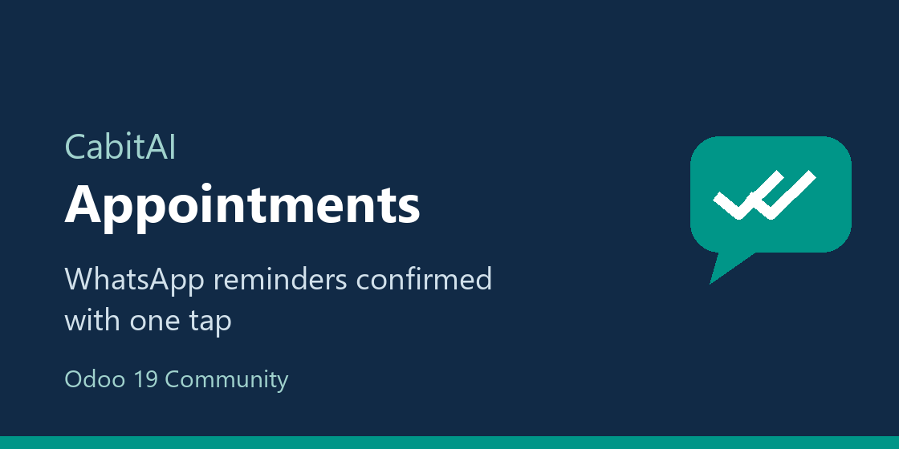

<section class="oe_container">
    <div class="oe_row oe_spaced">
        <h2 class="oe_slogan" style="color: #112a46">
            CabitAI Business Messaging - Field Service
        </h2>
        <h3 class="oe_slogan">
            WhatsApp appointment reminders that customers confirm with one tap.
        </h3>
        <div class="oe_span12">
            
        </div>
        <div class="oe_span12">
            <ul>
                <li>
                    A reminder before each visit with <b>Confirm</b>, <b>Change</b>
                    and <b>Cancel</b> buttons; the order is updated by itself.
                </li>
                <li>A thank-you message when the service is completed.</li>
                <li>
                    Turnkey: tick the options in the settings; the module writes the
                    templates and submits them to Meta.
                </li>
                <li>
                    The customer's answer on each order, and activities for the
                    changes and cancellations to handle.
                </li>
            </ul>
            <p>
                Requires CabitAI Business Messaging and OCA Field Service. Developed
                by <a href="https://cabitai.com">CabitAI</a>, with MTserveis (window
                cleaning, Barcelona) as its reference deployment.
            </p>
            <p>
                <small>
                    This module is not affiliated with, endorsed or sponsored by Meta
                    Platforms, Inc. or WhatsApp LLC.
                </small>
            </p>
        </div>
    </div>
</section>
